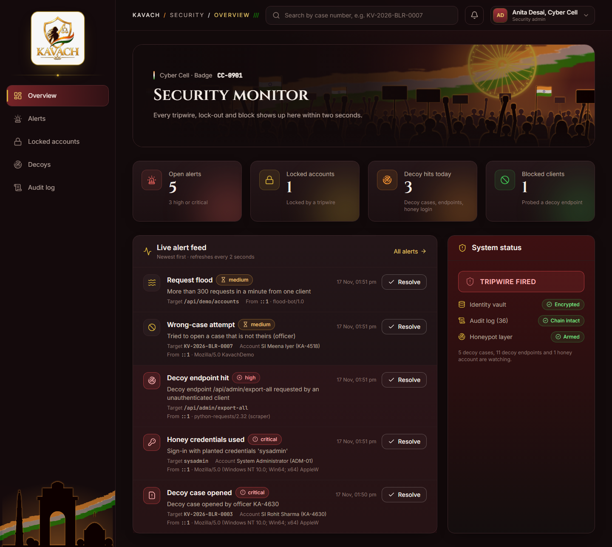
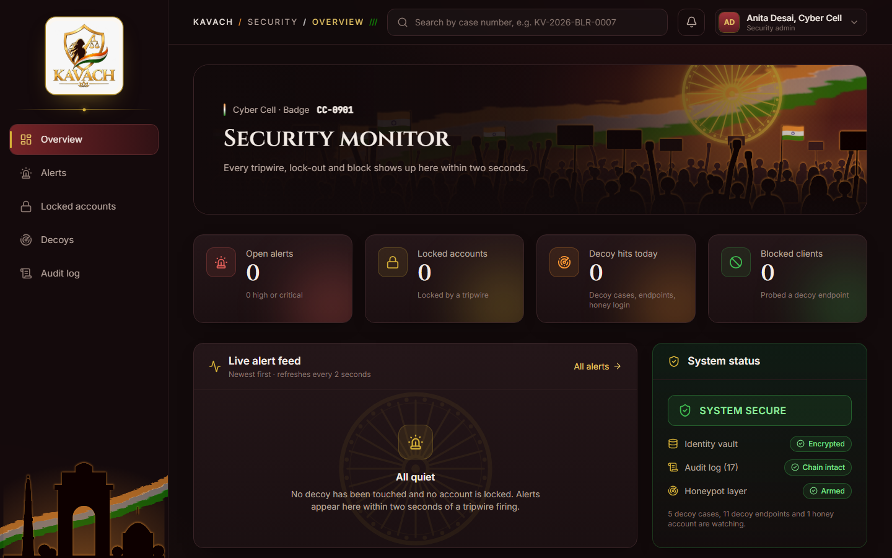
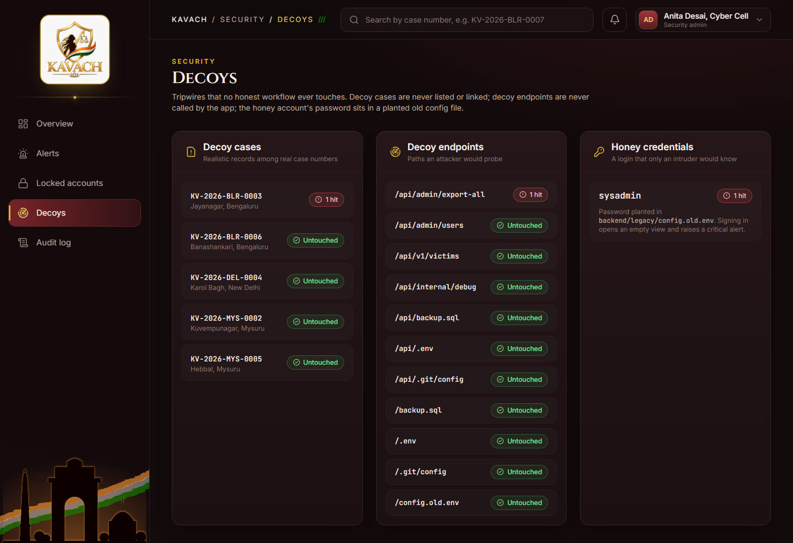
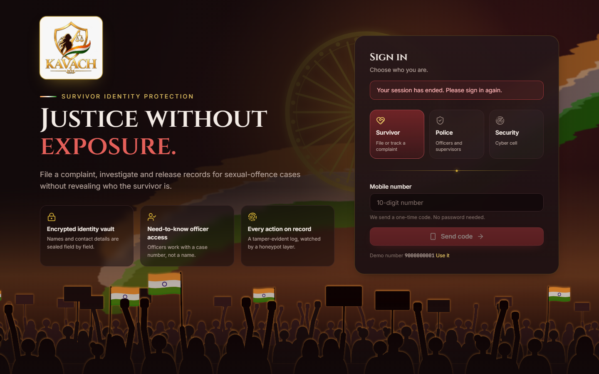
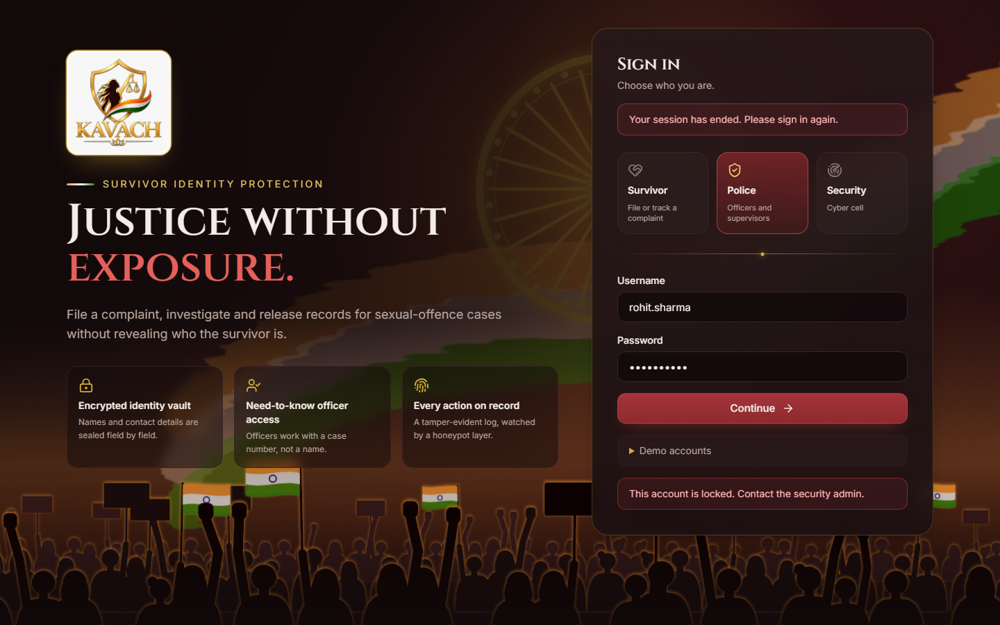
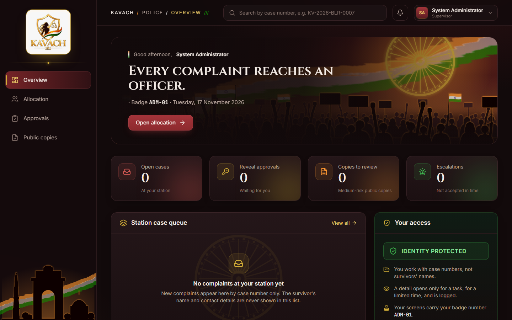
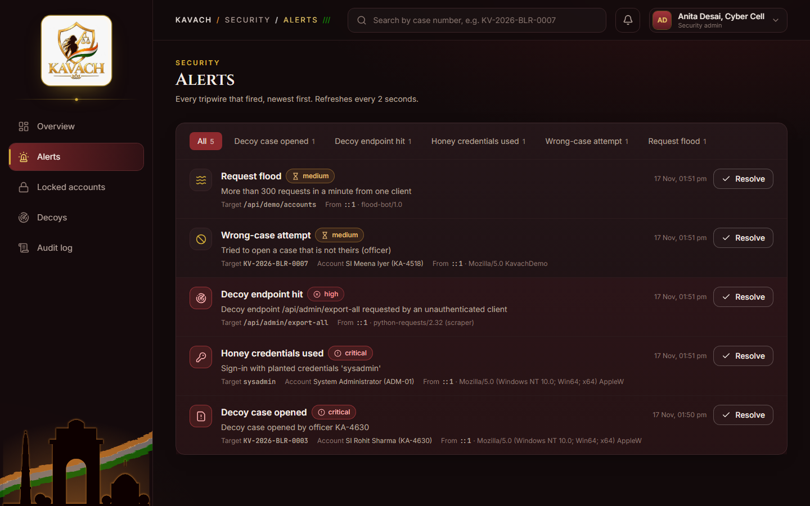
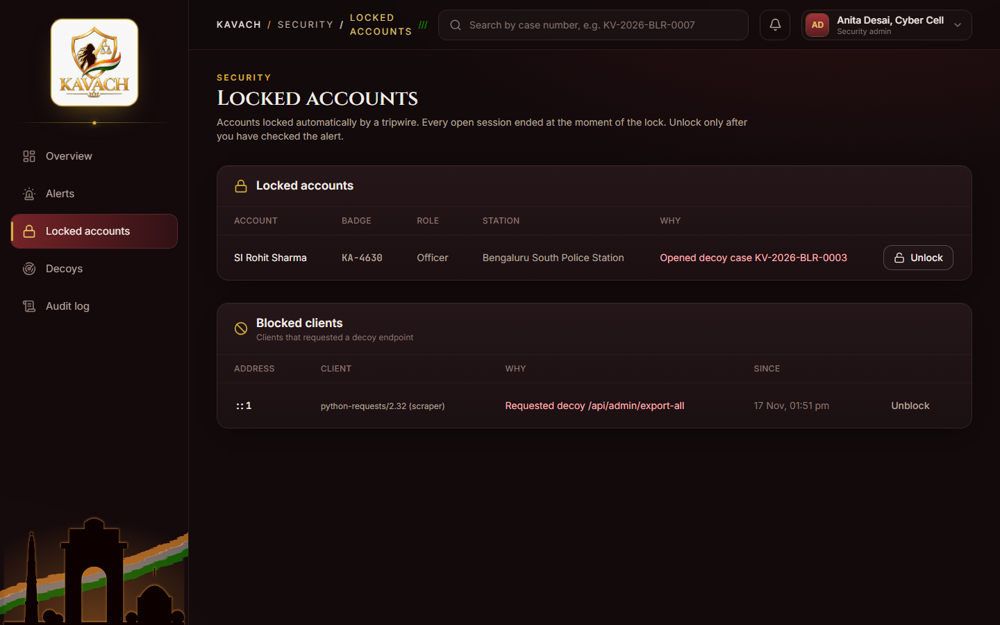
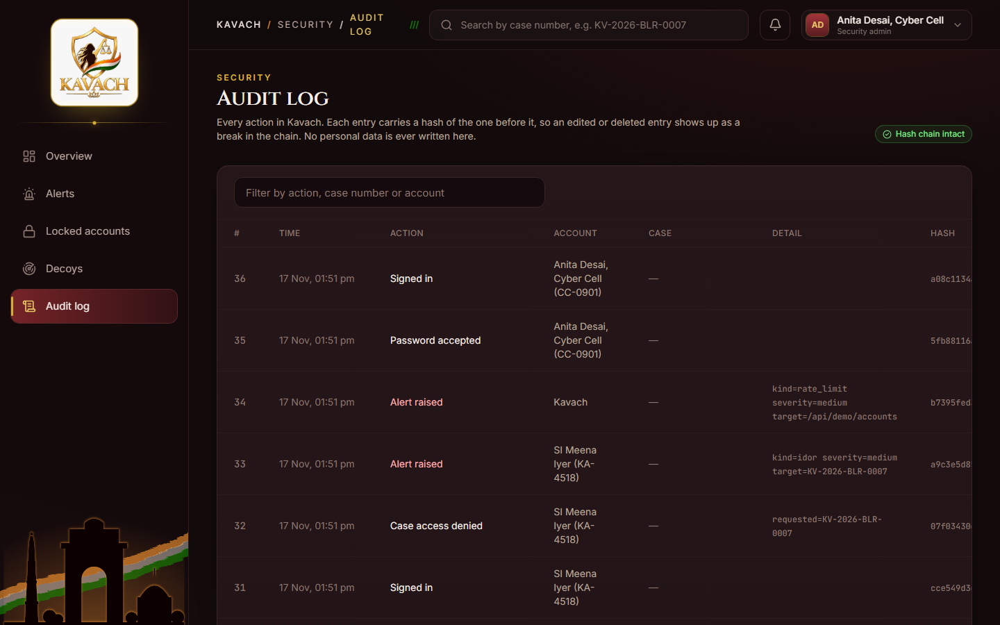

Kavach now catches the people its access checks are meant to stop. Five kinds of tripwire are armed, and each one fires an alert on the live security dashboard within two seconds:
- decoy cases hidden among real case numbers
- decoy admin and backup endpoints
- honey credentials in a planted old config file
- repeated attempts to open other people's cases
- request floods
Depending on the tripwire, it also locks the account or blocks the client.
The live security monitor



The tripwires, tested
| Tripwire | What the attacker did | What Kavach did |
|---|---|---|
| Decoy case | SI Rohit Sharma opened KV-2026-BLR-0003, a realistic case assigned to no one and never listed or linked | Showed only "not found"; raised a critical alert; locked the account and ended every session at once |
| Decoy endpoint | A script requested /api/admin/export-all, then tried anything else | Refused; raised a high alert; blocked that client from everything except sign-in; the demo browser was unaffected |
| Honey credentials | Someone signed in as sysadmin with the password from backend/legacy/config.old.env | Let them in to an empty, fake police view with no second factor; raised a critical alert; recorded every page they opened |
| Wrong case | An officer opened a colleague's case by its address | "Not found"; a medium alert each time; the account locks after 3 attempts in 10 minutes |
| Flood | A script sent 305 requests in a few seconds | Request 301 onward refused ("too many requests"); one alert per minute, not one per request |



Security admin tools



Also added
- Security headers on every response: no content sniffing, no framing, no referrer, and no caching of API data.
- Instant sign-out: the app returns any user whose session ends or account is locked to sign-in with the reason.
- Separation: officers and supervisors cannot open any security view, and the security admin cannot open case sheets.
Found and fixed during testing
The tamper-evident audit log caught a real race. Two requests arriving in the same instant both read the same "last entry" and chained to it. React's development mode fires the Redaction Studio preview twice. The chain check reported this as a break, which is exactly what it is for.
Fix: each audit write now takes the database write lock before reading the previous entry, so writes queue instead of racing. Results after the fix: 200 writes from 8 threads at once with 0 forks, and the full attack suite on fresh data reports the chain intact.
Not done yet, and limits
- On one demo machine every request comes from localhost, so a blocked client is identified by address plus browser signature. In deployment it would be the address. A determined attacker can change their browser signature; the address block is the real control.
- The rate limiter keeps counts in memory, so they reset when the server restarts and are not shared across servers.
- Alerts appear on the dashboard only. Sending them by SMS or email needs a provider.
- Canary documents (files that report when opened elsewhere) are not built; the plan listed them as a stretch item.
- The honey account's empty view is convincing only at a glance.
Next: Phase 7, demo data and full run-through
Load clean synthetic demo data, including a scanned complaint, and add a "Load sample scan" button. Run the 7-minute demo script end to end without touching code, and measure how well the redaction catches identifiers on a held-out synthetic set. Write the README with start commands, demo accounts and the demo steps.